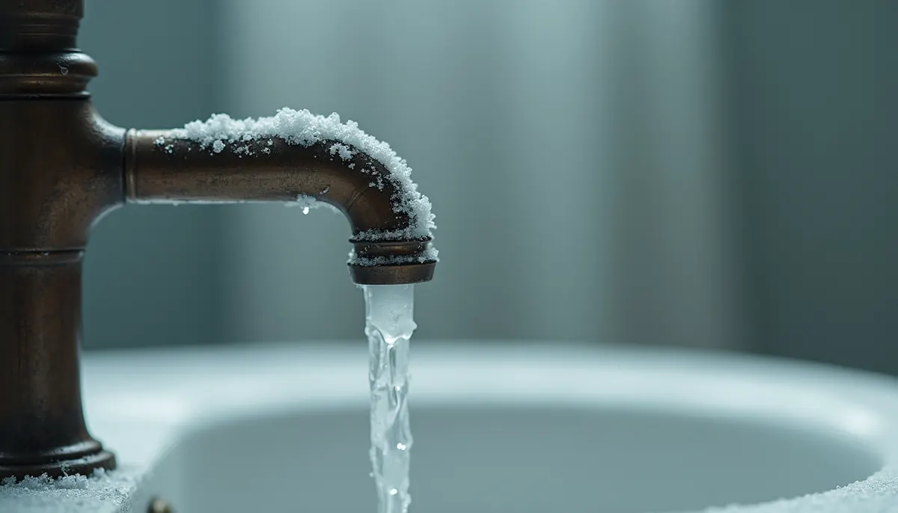
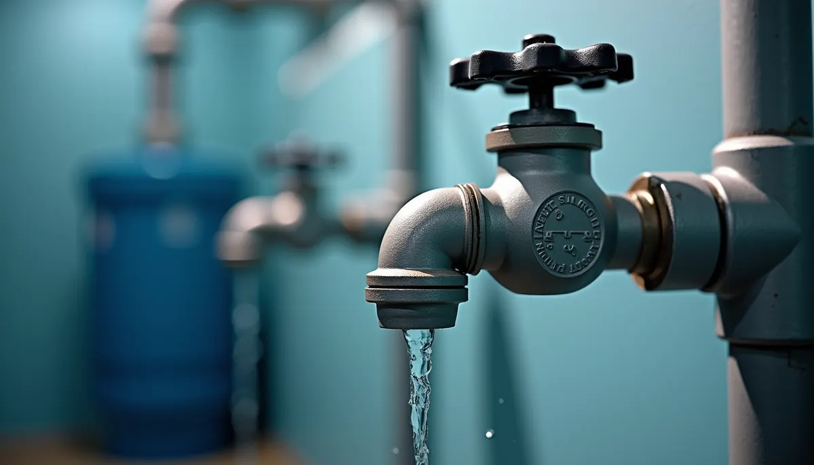
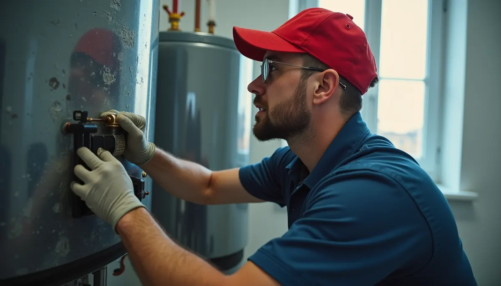

Have you ever noticed a white, chalky residue around your faucets or showerheads? That’s scale, a build-up of minerals that, while easy to overlook, can cause serious damage to your plumbing system. If left unchecked, scale can create a range of costly problems. In areas like Murfreesboro, Tennessee, where hard water is common, it’s crucial to understand the implications and take action before it’s too late.
Hard water contains dissolved minerals such as calcium and magnesium. When this water is heated or evaporates, it leaves behind these minerals, forming scale. While a little surface cleaning can mask the issue temporarily, the real trouble lies within your pipes and home appliances.
The Insidious Effects of Unchecked Scale Buildup
Scale can damage your plumbing system and strain your finances. Here are some of the key impacts:
Reduced Water Flow and Pressure
Think of scale as cholesterol in your pipes. Just as cholesterol narrows arteries, scale builds up on the walls of your plumbing, restricting water flow. This can lead to diminished water pressure from faucets and showerheads. According to various studies, households can experience a reduction in water pressure by up to 20% due to scale. This decreased flow can also hinder appliances such as dishwashers and washing machines, reducing their effectiveness.
Decreased Water Heater Efficiency and Lifespan
Water heaters are particularly susceptible to the effects of scale. The heating elements can become coated, forcing the unit to use significantly more energy—often up to 25% more—due to the layers of scale. This increased workload not only inflates your energy bills but can also lead to a breakdown. Did you know that neglecting to maintain your water heater can shorten its lifespan by 20-30%? For a device that may cost several hundred dollars, that is a substantial expense.
Clogged Fixtures and Appliances
Scale can contribute to blockages in your fixtures and appliances. Showerheads, faucets, and aerators can become clogged, leading to sporadic water flow or total blockages. In fact, nearly 50% of appliance failures are related to hard water issues. An appliance such as your dishwasher could require repairs costing upwards of $200 if scale builds up unchecked, obstructing water flow.

Water Quality Deterioration
Scale impacts the quality of your water, creating unpleasant tastes and odors. Some studies suggest that scale can harbor bacteria, leading to potential health risks. That’s right: this seemingly harmless buildup could introduce harmful contaminants into your drinking water—a shocking reality for many homeowners.
Increased Maintenance Costs
If you've dealt with unexpected plumbing emergencies, you know how quickly costs can add up. Regular plumbing calls can eat away at your budget. According to recent surveys, homeowners spend an average of $2,000 yearly on plumbing repairs related to scale issues. By ignoring scale buildup, you're setting yourself up for costly and inconvenient emergencies.
Why Angle Stop Plumbing Is Your Best Defense
Now that you see the damage scale can cause, it’s vital to know how to protect your plumbing. Angle Stop Plumbing offers effective solutions that are worth considering.
Expertise in Hard Water Issues
Angle Stop Plumbing specializes in identifying and managing hard water problems. Their trained professionals can pinpoint scale buildup before it escalates. Timely intervention not only saves money but also extends the life of your plumbing and appliances.
Advanced Solutions for Scale Prevention
Angle Stop Plumbing doesn’t just remove existing scale; they provide modern solutions like water softeners. By softening the water, you not only stop scale before it forms, but you also reduce your energy costs by as much as 30%. Less scale means less wear and tear on your plumbing.

Comprehensive Plumbing Maintenance Plans
Investing in a maintenance plan with Angle Stop Plumbing means regular inspections and proactive measures. This service can save you significant repair costs in the long run. Households that follow a regular maintenance routine report up to a 40% decrease in urgent plumbing issues.
Customer-Centric Approach
Angle Stop Plumbing stands out for their commitment to customer satisfaction. They prioritize quality service while educating homeowners about maintaining their plumbing systems. This approach ensures that your home remains a safe and comfortable space.
Taking Action to Preserve Your Pipes
Ignoring scale deposits might set you up for plumbing disaster or escalate repair costs. Engaging with experts like Angle Stop Plumbing can save both your budget and your home’s plumbing functionality.
Regular inspections, the installation of water softening systems, and commitment to ongoing maintenance will ensure you enjoy effective plumbing without surprise repair bills stemming from scale buildup.
Don’t wait until it's too late! Address the silent saboteur in your water system today and safeguard your home from unnecessary damage.
